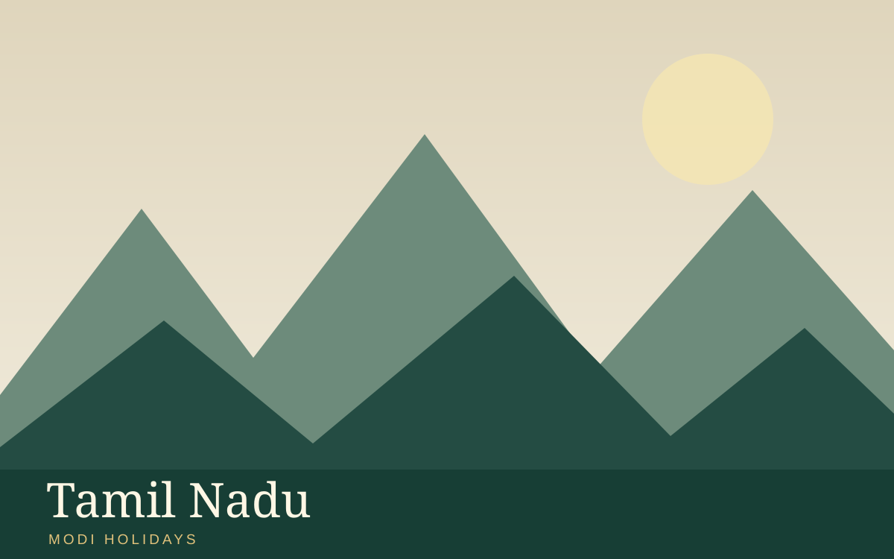

Places covered
Coimbatore → Ooty → Kodaikanal → Madurai
Day-wise sightseeing itinerary
Suggested itinerary. Exact travel times, hotel availability, entry tickets and activities are confirmed in your quotation.
Day 1
Arrive in Coimbatore; transfer and check in after arrival. If time permits, see Marudamalai Temple and local heritage. Overnight in Coimbatore.
Day 2
Travel from Coimbatore to Ooty; visit Botanical Gardens and Doddabetta Peak. Admission, activity timings and accessibility are subject to local conditions. Overnight in Ooty.
Day 3
Travel from Ooty to Kodaikanal; visit Kodai Lake, Coaker’s Walk and Pillar Rocks. Admission, activity timings and accessibility are subject to local conditions. Overnight in Kodaikanal.
Day 4
Travel from Kodaikanal to Madurai; visit Meenakshi Amman Temple. Admission, activity timings and accessibility are subject to local conditions. Overnight in Madurai.
Day 5
After breakfast, check out and depart from Madurai. Departure transfer, road timing and any onward flight or train will be confirmed in the final quotation.
Accommodation
Suggested comfort or deluxe hotels, or similar category; names confirmed with quotation
Meals and transport
Meals: Meal plan to be confirmed in your written quotation
Transport: Vehicle and transfer arrangements to be confirmed in quotation
Proposed inclusions
- Suggested itinerary and sightseeing planning
- Proposed accommodation category
- Transfer and guide options upon request
Proposed exclusions
- Flights, visas and insurance unless specified
- Entrance fees, optional activities and permits unless confirmed
- Personal expenses and meals not expressly included
Frequently asked questions
Can this tour be customised?
Yes. Dates, routing, accommodation and activities can be adjusted after enquiry.
Are hotels and departures confirmed?
No. Availability, itinerary feasibility and final inclusions require written confirmation.